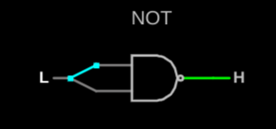
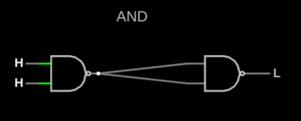
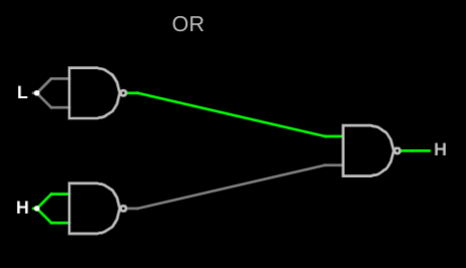
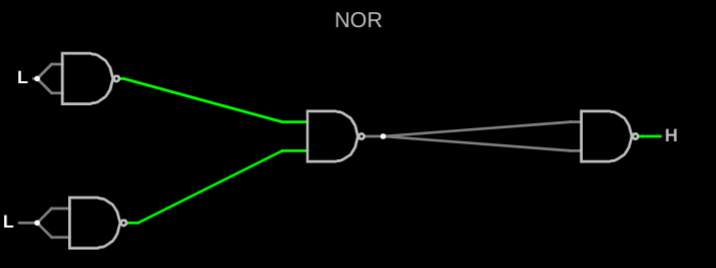
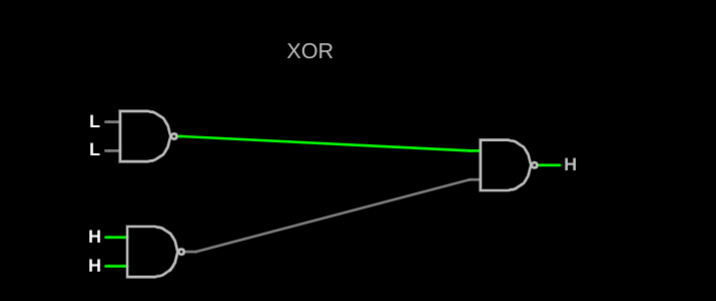

Name: Allison Norwine
Journal: J1016
Date: October 5 , 2022
I received assistance from: My Brother
I assisted: I did not need to assist anyone
Requirements
You must construct a NOT,AND,OR,NOR, and a XOR gate using only:
Wires
Logic Inputs
Logic Outputs
Two-input NAND Gates
Click Here to Try it Out!





What challenges did I encounter?
One of the challenges is that I could not link my images into my html.
How could this experience be improved?
This could improve by getting actual help and teachings over the matter and what we are supposed to do.
Free Reflection: How has what I've learned affected my thinking?
I now see that there are many different ways to complete one task, while we could of used a XOR gate we were able to create a XOR gate using only NAND gates.